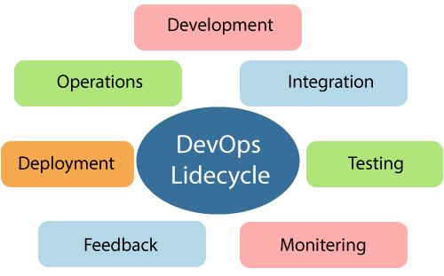
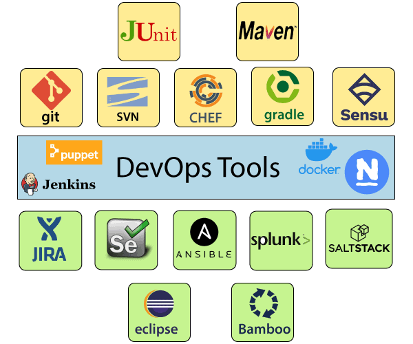

The DevOps is a combination of two words, one is software Development, and second is Operations. This allows a single team to handle the entire application lifecycle, from development to testing, deployment, and operations. DevOps helps you to reduce the disconnection between software developers, quality assurance (QA) engineers, and system administrators.
DevOps helps to increase organization speed to deliver applications and services. It also allows organizations to serve their customers better and compete more strongly in the market.
DevOps can also be defined as a sequence of development and IT operations with better communication and collaboration.
DevOps has become one of the most valuable business disciplines for enterprises or organizations. With the help of DevOps, quality, and speed of the application delivery has improved to a great extent.
DevOps is nothing but a practice or methodology of making "Developers" and "Operations" folks work together. DevOps represents a change in the IT culture with a complete focus on rapid IT service delivery through the adoption of agile practices in the context of a system-oriented approach.
DevOps is all about the integration of the operations and development process. Organizations that have adopted DevOps noticed a 22% improvement in software quality and a 17% improvement in application deployment frequency and achieve a 22% hike in customer satisfaction. 19% of revenue hikes as a result of the successful DevOps implementation.
Before going further, we need to understand why we need the DevOps over the other methods.
Here are some advantages and disadvantages that DevOps can have for business, such as:
To learn DevOps, you should have basic knowledge of Linux, and at least one Scripting language.
Without DevOps, the cost of the consumption of the resources was evaluated based on the pre-defined individual usage with fixed hardware allocation. And with DevOps, the usage of cloud, sharing of resources comes into the picture, and the build is dependent upon the user's need, which is a mechanism to control the usage of resources or capacity.
Many good practices such as Git enables the code to be used, which ensures writing the code for business, helps to track changes, getting notified about the reason behind the difference in the actual and the expected output, and if necessary reverting to the original code developed. The code can be appropriately arranged in files, folders, etc. And they can be reused.
The application will be ready for production after testing. In the case of manual testing, it consumes more time in testing and moving the code to the output. The testing can be automated, which decreases the time for testing so that the time to deploy the code to production can be reduced as automating the running of the scripts will remove many manual steps.
DevOps use Agile methodology to plan the development. With the operations and development team in sync, it helps in organizing the work to plan accordingly to increase productivity.
Continuous monitoring is used to identify any risk of failure. Also, it helps in tracking the system accurately so that the health of the application can be checked. The monitoring becomes more comfortable with services where the log data may get monitored through many third-party tools such as Splunk.
Many systems can support the scheduler for automated deployment. The cloud management platform enables users to capture accurate insights and view the optimization scenario, analytics on trends by the deployment of dashboards.
DevOps changes the way traditional approach of developing and testing separately. The teams operate in a collaborative way where both the teams actively participate throughout the service lifecycle. The operation team interacts with developers, and they come up with a monitoring plan which serves the IT and business requirements.
Deployment to an environment can be done by automation. But when the deployment is made to the production environment, it is done by manual triggering. Many processes involved in release management commonly used to do the deployment in the production environment manually to lessen the impact on the customers.
DevOps defines an agile relationship between operations and Development. It is a process that is practiced by the development team and operational engineers together from beginning to the final stage of the product.
Here are some most popular DevOps tools with brief explanation shown in the below image, such as:
DevOps engineers work full time. They are responsible for the production and continuing maintenance of a software application platform.
Below are some roles, responsibilities, and skills which are expected from DevOps engineers, such as:
We have a demonstrated methodology that takes an approach to cloud adoption. It accounts for all the factors required for successful approval such as people, process, and technology, resulting in a focus on the following critical consideration:
AWS is the best cloud service provider, and DevOps is the implementation of the software development lifecycle.
Here are some reasons which make AWS DevOps a highly popular combination, such as:
Let's see all of these by one in brief such as:
DevOps team is required to create and release cloud instances and services more frequently in comparison to development teams. Templates of AWS resources such as EC2 instances, ECS containers, and S3 storage buckets let you set up the entire stack without having to bring everything together.
You can run containers inside EC2 instances. Hence you can leverage the AWS security and management features.
This monitoring tool tracks every resource that AWS has to offer. It makes it easy to use third-party tools for monitoring such as sumo logic etc.
Code Pipeline is an essential feature from AWS, which highly simplifies the way you manage your CI/CD toolset. It integrates with tools such as Jenkins, GitHub, and CodeDeploy that enable you to visually control the flow of app updates from build to production.
Below are some essential differences between the DevOps and Agile:
| Parameter | DevOps | Agile |
|---|---|---|
| Definition | DevOps is a practice of bringing development and operation teams together. | Agile refers to the continuous iterative approach, which focuses on collaboration, customer feedback, small, and rapid releases. |
| Purpose | DevOps purpose is to manage end to end engineering processes. | The agile purpose is to manage complex projects. |
| Task | It focuses on constant testing and delivery. | It focuses on constant changes. |
| Team size | It has a large team size as it involves all the stack holders. | It has a small team size. As smaller is the team, the fewer people work on it so that they can move faster. |
| Team skillset | The DevOps divides and spreads the skill set between development and the operation team. | The Agile development emphasizes training all team members to have a wide variety of similar and equal skills. |
| Implementation | DevOps is focused on collaboration, so it does not have any commonly accepted framework. | Agile can implement within a range of tactical frameworks such as safe, scrum, and sprint. |
| Duration | The ideal goal is to deliver the code to production daily or every few hours. | Agile development is managed in units of sprints. So this time is much less than a month for each sprint. |
| Target areas | End to End business solution and fast delivery. | Software development. |
| Feedback | Feedback comes from the internal team. | In Agile, feedback is coming from the customer. |
| Shift left principle | It supports both variations left and right. | It supports only shift left. |
| Focus | DevOps focuses on operational and business readiness. | Agile focuses on functional and non-functional readiness. |
| Importance | In DevOps, developing, testing, and implementation all are equally important. | Developing software is inherent to Agile. |
| Quality | DevOps contributes to creating better quality with automation and early bug removal. Developers need to follow Coding and best Architectural practices to maintain quality standards. | The Agile produces better applications suites with the desired requirements. It can quickly adapt according to the changes made on time during the project life. |
| Tools | Puppet, Chef, AWS, Ansible, and team City OpenStack are popular DevOps tools. | Bugzilla, Kanboard, JIRA are some popular Agile tools. |
| Automation | Automation is the primary goal of DevOps. It works on the principle of maximizing efficiency when deploying software. | Agile does not emphasize on the automation. |
| Communication | DevOps communication involves specs and design documents. It is essential for the operational team to fully understand the software release and its network implications for the enough running the deployment process. | Scrum is the most common method of implementing Agile software development. Scrum meeting is carried out daily. |
| Documentation | In the DevOps, the process documentation is foremost because it will send the software to an operational team for deployment. Automation minimizes the impact of insufficient documentation. However, in the development of sophisticated software, it's difficult to transfer all the knowledge required. | The agile method gives priority to the working system over complete documentation. It is ideal when you are flexible and responsive. However, it can harm when you are trying to turn things over to another team for deployment. |
A list of frequently asked DevOps Interview Questions and Answers are given below.
The DevOps is a combination of two words one is software Development, and second is Operations. It allows a single team to handle the entire application lifecycle, from development to testing, deployment, and operations. DevOps helps you to reduce the disconnection between software developers, quality assurance (QA) engineers, and system administrators.
The principles behind DevOps are:
DevOps is very helpful for developers to fix the bugs and quickly implement the new features. It also helps in more transparent communication between the team members.
Here are some popular tools of DevOps, such as:
Following are some useful prerequisites for DevOps implementation:
The core operation of DevOps with application development and infrastructure are:
Application development
Infrastructure
The most important key components of DevOps are:
A Vagrant is a tool of DevOps that can create and manage virtualized environments for testing and developing software.
Following are the technical and business benefits of DevOps work culture:
Technical benefits
Business benefits
Scrum is used to divide a sophisticated software and product development task into smaller chunks using iterations and increasing practices. Scrum consist of three roles, such as:
It is a system that records the changes to a file or set of files over time so you can recall specific versions.
The version control system consists of a central shared repository where teammates can commit the changes to a file or set of files. It allows:
Both Python and Ruby scripting tools are used in the DevOps.
AWS is a cloud-based service provided by Amazon that ensures scalability through unlimited computing power and storage. It empowers IT enterprises to develop and deliver experienced products and deploy applications on the cloud.
Open source tools mainly used by any organization which is adapted by DevOps pipeline because DevOps came with the focus of automation in various aspects of organization build, release, change management, and infrastructure management areas.
Organization playbooks as the role give more reliability and reusability to any plays while considering a task where MySQL installation should be done after the removal of Oracle DB. You need another requirement to install MySQL after java installation. In both cases, you need to install MySQL, but without roles, it needs to write playbooks separately for both use cases. Still, once using roles, the MySQL installation role is created can be utilized any number of times by invoking using logic in site.yaml.
Here are some cloud computing platform used for DevOps implementation, such as:
The two-factor authentication is a security method in which the user provides two ways of identification from separate categories.
PTR is a pointer record that is used for a reverse DNS lookup.
Some most essential network monitoring tools are:
Three most important DevOps KPIs are:
Pair programming is an engineering practice of Extreme Programming Rules. In this case, two programmers work on the same system on the same design or algorithm.
One programmer act as a Driver and other as an Observer who continuously monitors the progress of a project to identify problems. The roles can be reversed at any point of time without any prior intimation.
Component-Based Development (CBD) is a unique way to approach product development. In this method, developers always look for existing well defined, tested, and verified components to compose and assemble them to a product instead of developing from scratch.
Automation is the crucial need for DevOps practices, and automate everything is the fundamental principle of DevOps. Automation kick starts from the code generation on the developer's machine, until the code is pushed to the code, to monitor the application and system in the production.
Automation in DevOps boosts speed, consistency, higher accuracy, reliability, and increases the number of deliveries.
A pipeline in software engineering team is a set of automated processes which allows DevOps professionals and developer to reliably and efficiently compile, build, and deploy their code to their production compute platforms.
Azure DevOps is also known as Microsoft visual studio team services (VSTS). It is a set of collaborative development tools built for the cloud. VSTS was commonly used as a standalone term, and Azure DevOps is a platform which is made up of a few different products, such as:
Here are some reasons which make AWS DevOps a highly popular, such as:
The build is a method in which the source code is put together to check whether it works as a single unit. In the build creation process, the source code will undergo compilation, testing, inspection, and deployment.
You can use SSH to log into a remote machine and work on the command line. Also, you can use it to tunnel into the system to facilitate secure encrypted communication between two hosts over an insecure network.
In AWS:
Git Bisect helps to find the commit which introduced a bug using binary search.